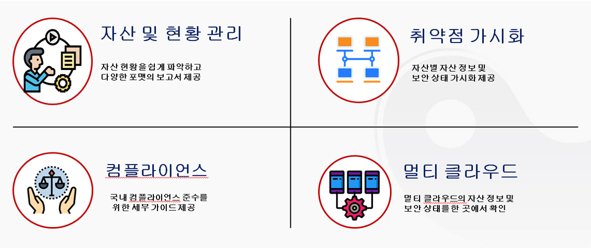
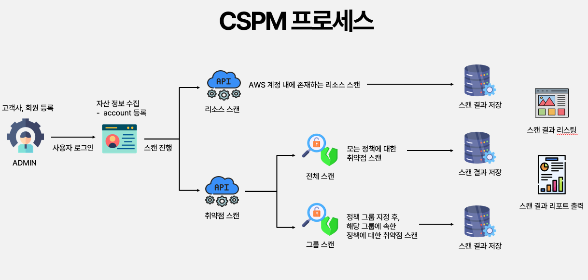
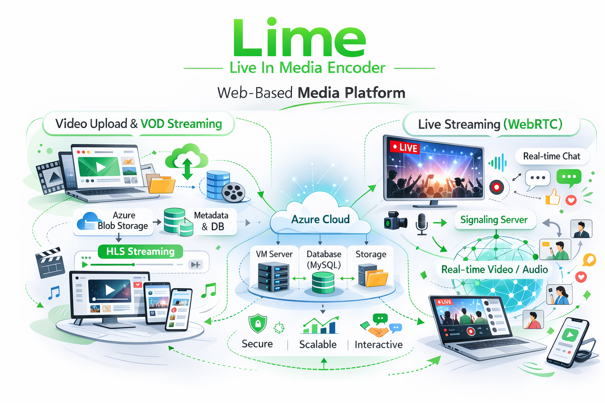
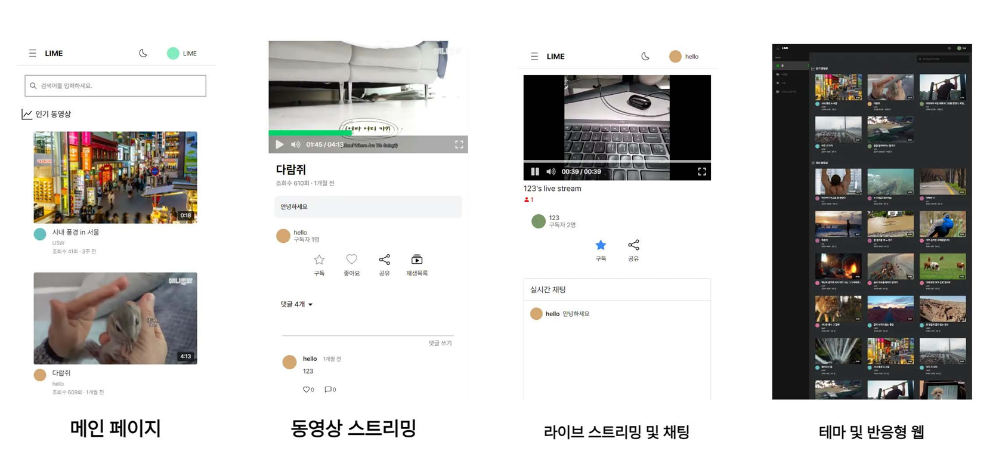

About
안녕하세요. 백엔드 개발자 김승현입니다.
How I work
- -(내가 채워놓을 것)
- -(내가 채워놓을 것)
What I value
- -(내가 채워놓을 것)
- -(내가 채워놓을 것)
Work Experience
🧩 프로젝트 개요
Cloud Security Posture Management(CSPM) 기반으로 AWS 자원을 수집·스캔하여 취약점을 탐지하고 상태를 관리하는 시스템입니다.
⚙️ 핵심 로직
자원 수집, 정책 기반 취약점 판단, 상태 트래킹(OPEN/EXCEPTION/CLOSE)을 위한 파이프라인과 스케줄러가 핵심입니다.
👨💻 주요 기여도
Backend
AWS SDK 기반 자원 스캔 로직 개발 및 고도화
EC2, S3, RDS 등 주요 AWS 자원을 대상으로 스캔 로직을 구현하고, 정기 스케줄링을 통해 상태를 주기적으로 수집하도록 개선했습니다.
DB 테이블 재설계
기능별 테이블 분리로 인한 관리 부담을 해소하기 위해 단일 테이블에 JSON으로 다르게 들어오는 데이터 구조를 저장하도록 설계하고, 정책 기반 파싱으로 필요한 필드를 추출하도록 구현했습니다.
취약점 탐지 및 상태 관리 시스템 설계/구현
SQL 쿼리문을 기반으로 취약점 탐지 정책 수립과 탐지 로직을 개발하고, 각 취약점의 OPEN/CLOSE 상태를 트래킹하는 워크플로우를 구축했습니다.
Frontend
자원 시각화를 위한 UI 컴포넌트 구현
AWS 자원 상세 정보와 필터/정렬 기능을 제공하는 UI를 구현해 사용자가 취약점을 쉽고 빠르게 탐색할 수 있도록 UX를 개선했습니다.
자원 필터링 및 상태 기반 검색 기능 개발
리소스 유형, 취약점 상태, 등록일 등 다중 조건 검색을 지원하는 클라이언트 사이드 필터를 구현했습니다.
DevOps
CI 구성 및 개발 환경 가이드
Docker Compose를 활용한 로컬 개발 환경 구성과 CI 파이프라인 가이드를 문서화하여 동료의 환경 재현성을 높였습니다.
사내망 배포 및 접근 제어 개선
내부망 배포 특성을 고려한 배포 가이드와 접근 제어 정책을 수립했습니다(사내 VPN, 방화벽 규칙 등).
🧯 트러블 슈팅
DB 테이블 과다 생성 문제 문제: 자원별 테이블 분리로 AWS 수집 자원이 늘어날때마다 DB 테이블이 늘어나야 되는 상황 발생 그로 인해 유지보수 및 확장성 문제 발생. 해결: 모든 자원을 JSON 형태로 단일 테이블에 저장하도록 변경. 리소스 타입은 구분 필드로 관리해 기존 14개 이상 테이블을 1개로 통합.
자원 중복 저장 및 취약점 판단 방식 고도화 문제: 스캔 시 중복 자원 저장으로 데이터 적재가 과다. 해결: JSON 키 정렬 후 문자열 비교로 변경 여부 판단해 변경이 없으면 timestamp만 갱신. 이후 해시 기반 비교 도입 검토.
기존 코드 기반 기능 확장 문제: 이미 일부 구현된 코드에 새로운 요구사항을 반영해야 하는 상황 해결: 먼저 핵심 로직을 분석하고 관련 메서드를 디버깅해 역할을 파악한 뒤, 점진적으로 기능을 구현하고 기존 코드와 통합.
Project
🧩 프로젝트 개요
AI Judge는 실시간 멀티플레이어 게임에서 심판 기능을 자동화하는 시스템입니다. 게임 상태를 중앙에서 관리하고 AI를 이용해 판정 및 이벤트 처리를 보조합니다.

⚙️ 핵심 로직
WebSocket 기반의 이벤트 처리, 게임 룸 매니저, 상태 동기화 및 AI 의사결정 통합이 핵심입니다.

👨💻 주요 기여도
Backend
실시간 이벤트 파이프라인 구현
WebSocket과 메시지 브로커를 결합해 대규모 동시 접속 환경에서도 안정적으로 이벤트를 처리하도록 구현했습니다.
세션 및 상태 일관성 보장
Redis 기반 세션 저장과 낙관적 락을 도입하여 상태 불일치 문제를 줄였습니다.
Frontend
실시간 UI 동기화 컴포넌트
React를 이용한 게임 UI로 서버 이벤트에 즉시 반응하도록 구현했습니다.
DevOps
컨테이너 기반 배포 및 모니터링
CI/CD 파이프라인으로 컨테이너 빌드와 배포를 자동화하고, 모니터링 알림을 구성했습니다.
🧯 트러블 슈팅
동시성으로 인한 상태 충돌 문제: 동시 접속 다수 시 게임 상태가 충돌하여 잘못된 진행이 발생. 해결: 이벤트 순서 보장과 충돌 감지 로직을 추가하여 상태 일관성을 확보했습니다.
AI 판정 지연 문제: AI 응답 지연이 게임 흐름을 끊음. 해결: AI 요청을 비동기 큐로 처리하고 타임아웃 폴백을 적용해 사용자 경험을 유지했습니다.
🧩 프로젝트 개요
Newstagram은 뉴스 기반의 개인화 피드 플랫폼으로, 기사 요약과 관심사 기반 추천을 결합해 사용자가 빠르게 콘텐츠를 소비할 수 있도록 설계되었습니다.
⚙️ 핵심 로직
뉴스 수집·정제 파이프라인, 텍스트 요약, 추천 모델 적용, 그리고 피드 생성 알고리즘이 핵심입니다.

👨💻 주요 기여도
Backend
뉴스 수집 및 ETL 파이프라인 구현
크롤러와 데이터 정제 파이프라인을 구축해 메타데이터를 추출하고 저장 자동화를 구현했습니다.
추천 API 및 캐싱 전략
추천 결과를 캐싱해 응답 속도를 개선하고, A/B 실험으로 추천 성능을 검증했습니다.
Frontend
반응형 피드 UI
무한 스크롤과 인터랙티브 피드 아이템을 구현해 사용자 참여를 높였습니다.
🧯 트러블 슈팅
중복 기사 노출 문제: 동일 또는 유사한 기사들이 반복 표시됨. 해결: 콘텐츠 유사도 기반 필터링을 도입해 중복 노출을 제거했습니다.
실시간 추천 반영 지연 문제: 사용자 행동이 추천에 즉시 반영되지 않음. 해결: 이벤트 스트리밍을 도입해 피드백 루프를 단축했습니다.
🧩 프로젝트 개요
Lime은 사용자 업로드 기반 동영상 스트리밍 플랫폼으로, 트랜스코딩 파이프라인과 CDN 연동을 통해 안정적인 재생을 제공합니다.
⚙️ 핵심 로직
업로드 수신, 트랜스코딩 오케스트레이션, CDN 업로드 및 재생 통계 수집이 핵심입니다.
👨💻 주요 기여도
Backend
트랜스코딩 워크플로우 구축
비동기 작업 큐와 컨테이너 기반 트랜스코더를 연동해 안정적인 변환 파이프라인을 만들었습니다.
CDN 통합 및 캐시 전략
콘텐츠 배포 최적화를 위해 CDN과 원본 스토리지를 통합하고 캐시 정책을 조정했습니다.
운영/DevOps
모니터링 및 자동 알림
트랜스코딩 실패 감지 및 자동 알림으로 운영 대응 시간을 단축했습니다.
🧯 트러블 슈팅
트랜스코딩 실패 증가 문제: 특정 포맷에서 오류가 빈번히 발생. 해결: 입력 검사와 포맷별 예외 처리를 추가하고 재시도 로직을 개선했습니다.
재생 버퍼링 문제: 네트워크 변동에 따른 버퍼링 문제가 발생. 해결: ABR(적응형 비트레이트) 적용과 CDN 설정 최적화로 버퍼링을 줄였습니다.
Activities
JAVA 전공반
웹 풀스택 개발자 과정
컴퓨터 소프트웨어 학과 전공